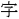

Version 0.9: uses https urls.
This Chrome extension gives you a button in the address bar (this one: ) to highlight (and unhighlight) Kanji in web pages you visit. The Kanji it will high-light come from the sections below. You can hook up to your WaniKani account with your API Key to pull down Kanji from all the levels you've completed or are working on. You can also enter arbitrary Kanji in the textarea below that you know, but may not have got to on WaniKani.
Once you've got some Kanji listed here, start visiting web-pages with Kanji in Chrome. At this moment they ought to highlight in a tasteful dark pink color.
Enter your WaniKani API key (from https://www.wanikani.com/account):
Enter any arbitrary Kanji you've learned elsewhere that you'd like to have high-lit.